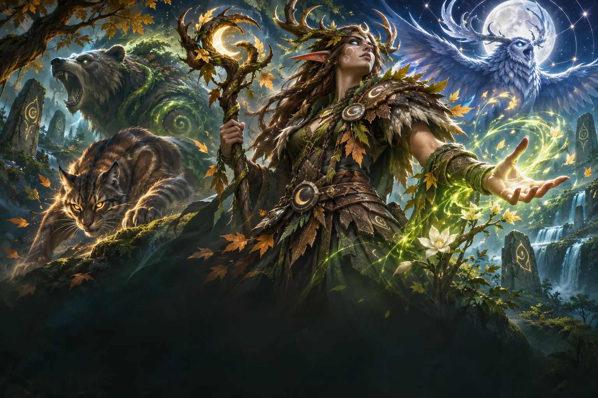
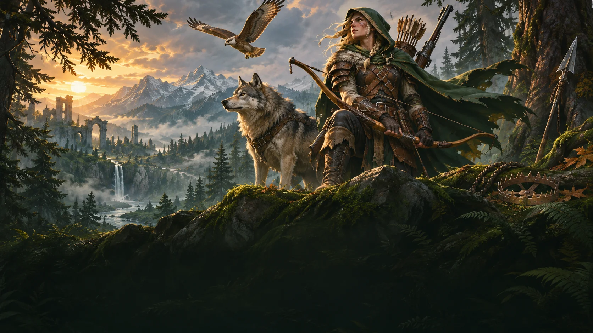
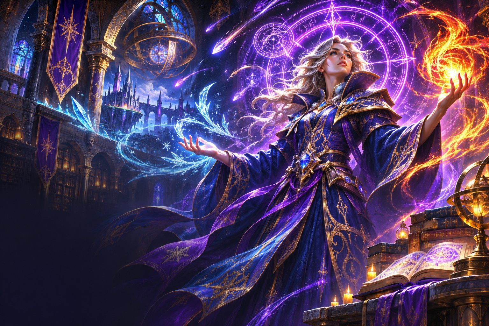
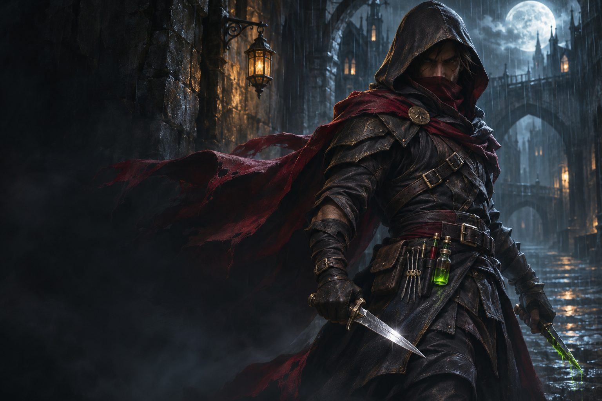

Druid
The Living Archive
A field guide to nine paths of the wild
Balance · Feral Combat · Restoration

Hunter
The Verdant Folio
A field guide to nine paths of the hunt
Beast Mastery · Marksmanship · Survival

Mage
The Astral Athenaeum
An illuminated codex of nine Arcane paths
Arcane · Fire · Frost

Paladin
The Golden Codex
Nine sacred paths
Holy · Protection · Retribution

Priest
The Illuminated Codex
Nine paths of Light and Shadow
Discipline · Holy · Shadow

Rogue
The Shadowblade Manual
Nine paths of the assassin
Assassination · Combat · Subtlety

Shaman
The Shaman Codex
The definitive field manual
Elemental · Enhancement · Restoration

Warlock
The Obsidian Library
A field guide to nine dark paths
Affliction · Demonology · Destruction

Warrior
The Iron Vanguard
A field guide to nine paths of war
Arms · Fury · Protection